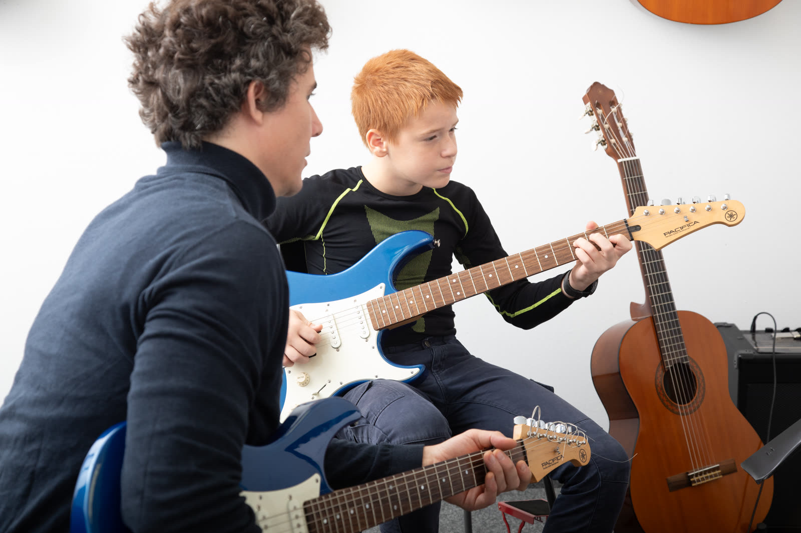
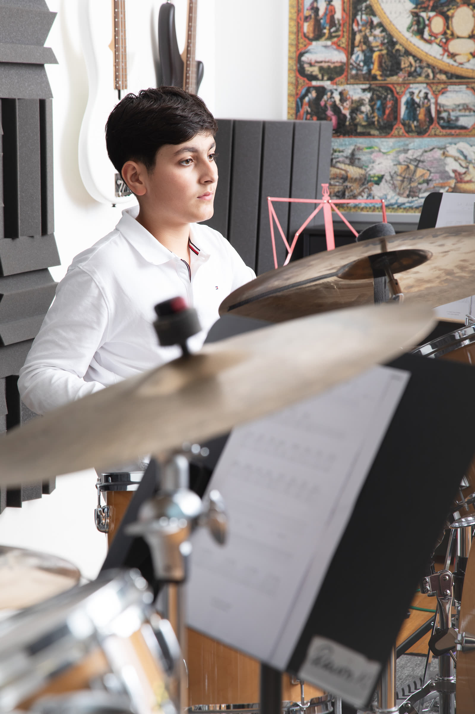
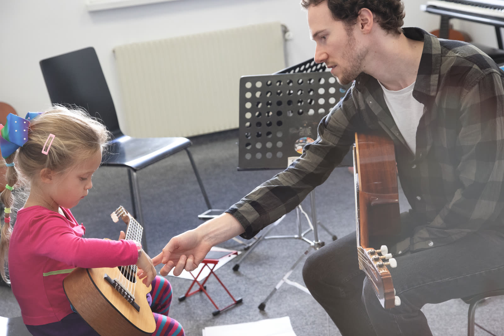

Programi za najmlađe
Yamaha edukacija kreće od najranije dobi. Svaki program prati razvojnu fazu djeteta. Trenutno su dostupni programi od 8 godina naviše.
Kako se prijaviti?
Upis na dostupne programe (8+) moguć je tokom cijele godine. Kontaktirajte nas za probni čas.
Kontaktiraj nas →Popularni muzički kursevi
Yamaha Popular Music Courses — kursevi za uzrast od 8 godina naviše, u opuštenoj atmosferi uz međunarodno priznatu metodu.



Grupni i individualni rad
Svi popularni kursevi dostupni su u malim grupama (4–8 učenika) ili individualno — uključujući odrasle. Kontaktirajte nas za dostupnost instrumenta i rasporeda.
Provjeri dostupnost →
Program osnovne muzičke škole
Nastava prema zvaničnom nastavnom planu i programu. Kod ovlaštenih partnera polaže se ispit i stječe se zvanično svjedočanstvo.


Provjerite dostupnost
Pišite nam i provjerite koji su predmeti OGŠ programa dostupni u Banja Luci i kada su termini.
Pišite nam →